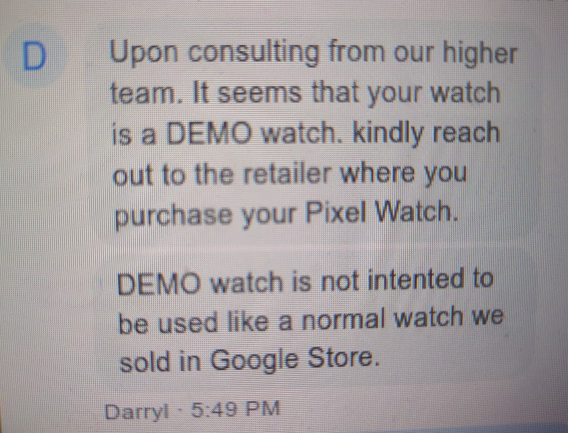

Customer Support
June 28, 2025
This is a little blog to break the months-long gap. I'll be going over most of the times I have been on a customer support line.
Spectrum
2017 Password incident
The first time was likely back in 2017, right after the Time Warner merger. I was changing my grandma's router password after she forgot it. For a first contact it was surprisingly well but what is the kicker were my next interactions.
2021 Inactive incident
I entered a live chat with someone due to something with the My Spectrum app. The person really wanted me to exit it, I'd guess. He tried to push this 'Are You Still There?' message on screen like 6 times in a row, then abruptly closed the chat as I was "inactive". I gave them 1 star as a result.
2022 My Spectrum incident
The My Spectrum app issue was still there so I went into a live chat again. I go on about what the problem is and I don't think the person was really experienced. At this time we had an Internet and TV service. When I told them about the issue, which was me not being able to use the My Spectrum app to control the router/modem, they said:
"you don't have a router, you have Internet"
2023 Dead Router incident
I'm not even gonna go into "you don't have oxygen, you have air" type of statement so I just left it as is. Later on it got resolved as we got a new set entirely during the end of 2023.
And it was because of the following wastes of plastic and metal.
This Spectrum Internet set would not work as the router would turn off seconds after it turned on.
In one of my old Reddit accounts, the router can be seen here. Much to my dismay that I'd have to send it back, I kept the Ethernet cord though!
One thing I'd like to mention is that there was a selfish commenter that wiped their entire account with gibberish, and I unknowingly bypassed it for onlookers as I quoted it.
During the end of 2023 I got my Wii and I connected it only to realize that the router I had was incompatible. Thankfully this was the time that the router suddenly died.
In the later days, I ended up getting an older model that was compatible with the Wii!
2018 Google Play Card incident
One day while getting home from H-E-B, I had a $10 Google Play card ready to redeem. These cards are usually scratch-offs but I liked to peel the whole thing off.
Of course this time, I accidentaly peel some letters off of the card. My aunt helped me get its code redeemed. Overall, the employee deserved a 5 star for making sure I didn't waste my money.
2021 Recent Apps incident
This was my first chat and it went really well! The issue was on my Google Pixel 3a, I couldn't launch the Recent Apps menu as clicking on the square icon would do nothing.
The solution was to clear the cache of the Pixel Launcher. Simple enough, but I couldn't thank the employee since it reset the Google app.
2025 DEMO Watch incident
I'll start off by saying all I wanted was some Pac-Man plushies.

The order got cancelled, so I went to look for something else to buy.
Then I saw a cheap Pixel Watch to compliment my Pixel 7a and Pixel Buds that I already had. Skipping the wait time, I got it but I couldn't update the firmware.
So I got into a support chat again, explained what I tried, tried it again because that's how support is, then the person brought something up.
He wanted to know what serial number that watch had since it rejected OTA updates. This got interesting after he had to get a word in with higher-ups.
...and dammit
You may have also seen this post on r/mildlyinfuriating. The screen definitely looked like it was used in a store as it had OLED burn-in.
As much as I was recommended to return it, I was not in the mood to go through the process when this was supposed to be a replacement for the Pac-Man plushies.
The DEMO watch's main issues were that it couldn't update itself, and had a burned-in screen. That honestly wasn't that bad considering I was barely using it much.
Overall
I've had quite a few tech problems so I'll send my gratitude to the people that helped with them...and a Are You Still There? message to that one guy.